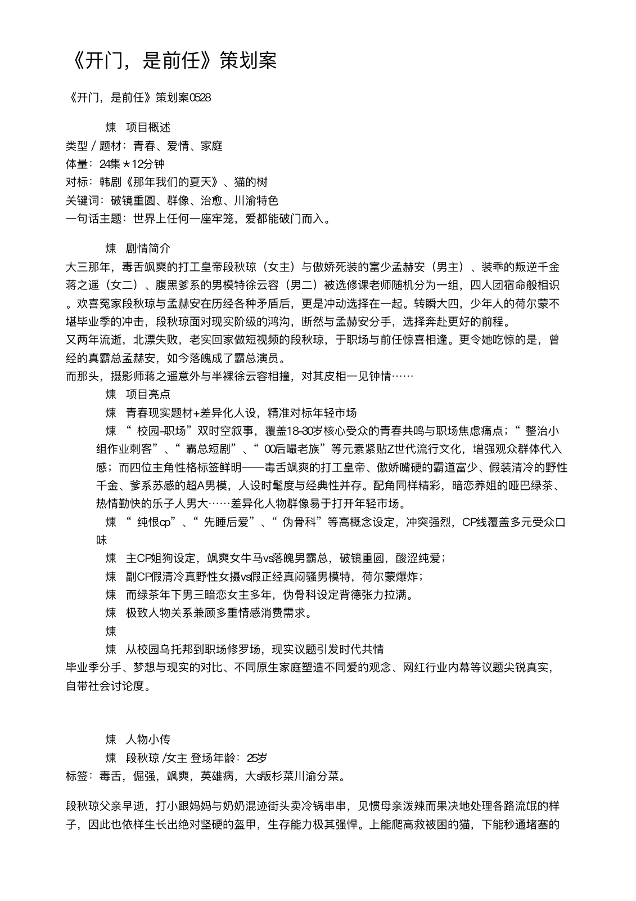

《开门，是前任》策划案

上方为 PDF 版式预览；下方为完整文本阅读区。
《开门，是前任》策划案0528
•项目概述
类型／题材：青春、爱情、家庭
体量：24集＊12分钟
对标：韩剧《那年我们的夏天》、猫的树
关键词：破镜重圆、群像、治愈、川渝特色
一句话主题：世界上任何一座牢笼，爱都能破门而入。
•剧情简介
大三那年，毒舌飒爽的打工皇帝段秋琼（女主）与傲娇死装的富少孟赫安（男主）、装乖的叛逆千金蒋之遥（女二）、腹黑爹系的男模特徐云容（男二）被选修课老师随机分为一组，四人团宿命般相识。欢喜冤家段秋琼与孟赫安在历经各种矛盾后，更是冲动选择在一起。转瞬大四，少年人的荷尔蒙不堪毕业季的冲击，段秋琼面对现实阶级的鸿沟，断然与孟赫安分手，选择奔赴更好的前程。
又两年流逝，北漂失败，老实回家做短视频的段秋琼，于职场与前任惊喜相逢。更令她吃惊的是，曾经的真霸总孟赫安，如今落魄成了霸总演员。
而那头，摄影师蒋之遥意外与半裸徐云容相撞，对其皮相一见钟情……
•项目亮点
•青春现实题材+差异化人设，精准对标年轻市场
•“校园-职场”双时空叙事，覆盖18-30岁核心受众的青春共鸣与职场焦虑痛点；“整治小组作业刺客”、“霸总短剧”、“00后嘬老族”等元素紧贴Z世代流行文化，增强观众群体代入感；而四位主角性格标签鲜明——毒舌飒爽的打工皇帝、傲娇嘴硬的霸道富少、假装清冷的野性千金、爹系苏感的超A男模，人设时髦度与经典性并存。配角同样精彩，暗恋养姐的哑巴绿茶、热情勤快的乐子人男大……差异化人物群像易于打开年轻市场。
•“纯恨cp”、“先睡后爱”、“伪骨科”等高概念设定，冲突强烈，CP线覆盖多元受众口味
•主CP姐狗设定，飒爽女牛马vs落魄男霸总，破镜重圆，酸涩纯爱；
•副CP假清冷真野性女摄vs假正经真闷骚男模特，荷尔蒙爆炸；
•而绿茶年下男三暗恋女主多年，伪骨科设定背德张力拉满。
•极致人物关系兼顾多重情感消费需求。
•
•从校园乌托邦到职场修罗场，现实议题引发时代共情
毕业季分手、梦想与现实的对比、不同原生家庭塑造不同爱的观念、网红行业内幕等议题尖锐真实，自带社会讨论度。
•人物小传
•段秋琼 /女主 登场年龄：25岁
标签：毒舌，倔强，飒爽，英雄病，大s版杉菜川渝分菜。
段秋琼父亲早逝，打小跟妈妈与奶奶混迹街头卖冷锅串串，见惯母亲泼辣而果决地处理各路流氓的样子，因此也依样生长出绝对坚硬的盔甲，生存能力极其强悍。上能爬高救被困的猫，下能秒通堵塞的马桶管道。
导演系科班毕业后，段秋琼曾北上追梦，失败后归蓉，靠着大学时的自媒体经历入职MCN机构做了搞笑剧情向达人。作为土生土长的成都歪婆娘，段秋琼在面对同期对手的脏招、忽高忽低的流量困境、以及意外与前男友同居等等挑战下，反而生出了干翻生活的勇猛之心。
每天起床第一句，必须怒吼要雄起。
情感对象：
•孟赫安/主cp
关键词：姐狗｜欢喜冤家｜破镜重圆｜人前不熟人后同居
“彼时年少，都以为往前一步就没了后路，只能决绝地走上独木桥，殊不知这世上还有很多折衷的路，可以容得下两个人并肩一起走。”
大一那年，段秋琼家逢变故，极度缺钱，为此她成为全校闻名的打工皇帝。而新媒体选修课，偏偏与最厌烦铜臭气息的富少孟赫安分到一组。面对期末作业的涨粉要求，一时沉溺文艺的霸少孟赫安不食人间烟火，执意要拍科普向艺术史短视频，好在追求奖学金的段秋琼治理“小组作业刺客”经验委实丰富，她表面顺从孟赫安，实则带着蒋之遥和徐云容以剪辑技巧重构花絮视频，做了“strong男同学合集”的吐槽向段子，顺利拿下高分。事后，孟赫安与段秋琼就此结下梁子。
直到校内流浪猫被虐打事件爆发，段秋琼组织救助小组，半夜账号收到捐款5w，这般豪横的姿态，让她秒猜出对方身份。而后两人带着对彼此的嫌弃，携手对接学校、建立猫协，并挖出虐猫真凶，报警让对方受到应有的惩罚。最后在周遭的欢呼中，对彼此改观的两人也顺势在一起。
然而当荷尔蒙褪去，出身不同阶级的两人，大到人生目标，小到约会地点，都浮现种种分歧。恰逢毕业季春招，面临重重生活压力的段秋琼，再一次无奈拒绝孟赫安赏花的邀约，并残忍提出分手。她从前最欣赏孟赫安的松弛，最羡慕他自由轻盈的生活态度，但也终于忍受不了这份优点随之带来的不接地气。
没成想，两年后再见，孟赫安竟活成了段秋琼曾经的样子——衣服是1688上19.9包邮的，吃饭是要公众号领膨胀神券，并好评返现的。大约是太穷了，他家还遍地留存了段秋琼的痕迹，比如她曾经送他的礼物袋，被改造成了纸巾盒，比如她曾经送他的酒瓶，修修补补成了壁挂。
段秋琼难以想象这位曾经的孔雀男经历了什么，但从心生怜爱的那一瞬开始，红线已经再次探出了触角。
•原生家庭
关键词：祖孙三代 女性家族 市井气息
你把故乡的井背在身上/在远方一个人走了很多难走的路
每每想哭就舀一口水/身体里便升腾起源源不断的祝福:
“甘泉养育的孩子不怕苦。”
段秋琼从有记忆开始，就是跟妈妈、奶奶生活的，三个女性构成了最稳定的小小三角形，对抗所有来自生活的意外与风暴。毋庸置疑，段秋琼家境清寒，但她回忆童年，咂不出一丝苦味，因为不论经历什么样的低潮，母亲总是笑着摸摸她的头，说没关系，会有办法的——这让小段秋琼一度觉得所有的困难，都只是母亲英雌故事的序言。
直到后来母亲的右手再也抬不起来，段秋琼才发现母亲原来没有魔法，她不过是个再普通不过的中年女性。
但没关系，段秋琼看着母亲头顶的斑秃，没关系，段秋琼重复母亲的口头禅，她会成为母亲的“母亲”，要成为三角形里最坚固的一角。
人物成长：从拥有坚硬外壳、习惯扛起照顾所有人的责任，到学会给自我卸绑。
•孟赫安/男主 登场年龄：24岁
标签：耙耳朵，嘴硬傲娇，外浪内纯，搞笑霸总。
三年前曾是意气风发的富少，去油版道明寺。
家境优渥、父母双全、身体康健，加之天生帅脸，孟赫安前21年的人生顺得一塌糊涂。因此他成日胸无大志，只知玩乐。
直到天降狗血。父亲病重，家道中落，他竟发现自己是父亲和外人偷情的结晶。骄傲的孟赫安接受不了现实，更面对不了宠了自己二十多年的名义上的母亲。于是他出逃，决心自立门户，拼命地想证明自己。
结果大少爷外卖跑了、奶茶摇了、传单发了……累晕在街头，才发现身兼多职的月薪，到手还不够给自己豪车做个保养的。
正痛苦时，孟赫安一低头，和可怜巴巴的流浪狗对视，突然决心振作——作为讲义气的大少，只要还有生物需要他，他就不能倒下。
情感对象：段秋琼/主cp
关键词：纯恨（爱）｜破镜重圆｜自我攻略
“你走后，泄了一地的爱没人要。我努力要恨你，可是没办法。我可怜的爱情，在你走后它才真正出生。”
•段秋琼对孟赫安来说，太过特别。
•坦白来说，孟赫安21岁前，看番茄的爽文小说只会深觉无聊——“爽吗？还不如我的日常生活。”他的富足，既指物质，也指精神。他多的是钱，多的是爱。但细数全身上下所拥有的，好像都来源于孟家独子这个身份。
•直到遇见段秋琼，她对他起初微妙的不屑反感，再到后续的讶异改观，她讨厌的喜欢的都是他孟赫安本人。因此他一度感到羞涩，是的，他人生第一次被扒光了全身高定看灵魂，能不害羞吗？孟赫安躺平的人生目标因此晃晃荡荡，终于产生了也得干些什么实事的想法。他甚至有些自卑，害怕，因为他知道段秋琼不会停步，她每时每分都在奔往更好的世界。因此他粘人，反复向段秋琼确定爱的存在。
•哪知反遭厌弃。被分手的孟赫安恨意滔滔，他恨段秋琼的绝情，更恨自己的无力——倒也没有爱得多么刻骨铭心，只是在他短暂的人生里，第一次尝到不可控的滋味，因此格外地记忆深刻。
•如果能再见，如果能再见，他一定要做个事业有成的富n代，西装革履，摇晃红酒杯，然后大方地说“好久不见”。
•但命运弄人。时隔两年，再次重逢，他身着19.9包邮的短袖白t，发型被雨打乱，手上还拎着国潮外卖。
•太糟糕的见面，孟赫安眼前发黑，幸亏段秋琼彼时同样落魄。
•好久不见，我混得一般，好在你也一样。
•
•人物成长：从躺平废物二代，到成为和世界建立真实连接的有为青年。
•
•蒋之遥/女二 登场年纪：24岁
标签：表面清冷寡言，端庄千金。实际野性、叛逆。
书香门第出身，家规严苛。单亲家庭，跟父亲一起长大，然而曾遭遇孩子走丢的父亲控制欲强烈，一度导致她心理疾病发作后失语。高中曾被恶意碰瓷，得女主仗义相救，因此两人关系甚笃。
私下追求刺激，喜欢接触一切极限运动。她同时还是人像摄影师，以善于挖掘模特情绪闻名——张力，欲望，灼热，是她作品评论区最常出现的字眼。
但毕业后，囿于种种限制，依旧选择了安全道路，在老年大学教小语种。
情感对象：徐云容/副cp
“我刚爱上他时眞恨不得把他拆开来/就像一个孩子拆开发条玩具/以便了解内在/那不可思议的机械原理”
蒋之遥大三初识徐云容时，几乎是生理性厌恶对方——高个死鱼脸，跟她爸一个德行。
而这份讨厌，在两人选中同一门选修课、又被分成同一个小组后达到了巅峰。徐云容总是忙碌，总是缺席组会——太不靠谱，还不如她爸。
因此整个大学期间，徐云容对于蒋之遥来说只是个形象负面的男同学。直到两年后，蒋之遥意外敲开徐云容家的门。
惊诧中，她将对方半裸的上半身尽收眼底——很美的曲线，她脑子里瞬时产出八百种创作方案，真想把他关进摄影棚，拍个十天十夜啊。
命中注定，他会成为她最好的缪斯，觉醒后通向自由的最佳利刃。
人物成长：曾经是伪装自我的大家闺秀，后来被徐云容看穿、接纳，最终学会面对真实自我。
•徐云容/男二 登场年纪：24岁
标签：高冷，苏感，男模，少年爹系。
徐云容自小在孤儿院长大，但没过多久苦日子，就被院长的朋友一眼相中，早早做了童模出道。较之同龄人，他见识过世界的更多面，也更有生活经验，因此他习惯于摆出老成一面，习惯喜怒不形于色。室友孟赫安对他的辛辣评价是：活得像个盘核桃的民国遗老。
差不多吧，徐云容懒得反驳。他的生活的确是条一眼就望得见尽头的铁轨。规律，平稳，无趣。偶尔回孤儿院时，徐云容才产生微妙的复杂情绪，毕竟对他而言，那是勉强可以称之为家的地方。
至于家人，除了老院长，大学室友孟赫安也勉强算一个。因此在得知对方露宿街头时，洁癖极重的徐云容把楼下那间屋子的钥匙丢给对方——是的，整栋楼都是他的房产。
孟赫安骂骂咧咧他终于不装穷了，殊不知对于边界感极重的徐云容来说，楼房像他的躯壳，能拿到钥匙的只有家人，以及即将改变他的爱人。
情感对象：蒋之遥/副cp
“爱是自由意志的沉沦。”
“我明白我会爱你，像狂兽像烈焰的爱，但不准，这事不能发生，会山崩地裂，我会血肉模糊。”
在离开灯红酒绿的名利场后，徐云容喜欢收集各种各样的古画。直到某天刷到蒋之遥的摄影作品，他透过网络窥得一团燃烧的灵魂火焰，于是不可抗拒地被吸引。不久，他发现对方的真实身份竟是曾选修过同一门课的校友。
更有意思的是，某一天，她叩响了他的家门。
——老树着火的后果，自然是一发不可收拾。
昔日的高岭之花，怎么也想不到自己会有一日，心甘情愿被人涂抹、开发、玩弄。
人物成长：从对生活感到厌倦，到乐于感知世界的色彩。
•蒋屿 男 登场年纪：20岁
标签：看似阳光开朗实则阴湿男鬼，哑巴
八岁那年，蒋屿被人贩子拐走，他聪明，逃了出来。
但嗓子哑了，又流落他乡，小蒋屿很努力地走，但耳边的方言却越来越陌生。到底只有八岁，再早慧也是小孩子，他忍不住躲在角落地哭，哀哀地，坏了的嗓子发出小兽般的呜咽。
夕阳垂落，满天烧红时，他觉得自己也快死了。正当他闭上眼等死时，鼻尖嗅到香辣的串串味。
打小仗义的段秋琼站定，把所有本该送到亲戚家的串串，全塞给了可怜兮兮的小哑巴。蒋屿一边吃，一边哭，他吃不出味道，只记得好香好香。
段家清贫，但面对找不到家人的小蒋屿，还是咬牙收养了。蒋屿很高兴，闻着冷锅串串的味道，拼命帮忙干活。许多人打趣他是段家童养夫，段秋琼看似飒爽，却很懂得照顾他人，生怕他不喜，因此总是郑重其事地替他解释。
殊不知这谣言就是蒋屿散出去的。
从发现姐弟关系不能相伴一生开始，蒋屿便下定决心——做倒插门。
•
•故事大纲
放弃北漂、回归老家的女主，签约MCN机构做自编自导自演的搞笑剧情向达人。然而同赛道的前辈屡屡擦边抄袭她创意，还先一步挖走她的预备合作对象。距合同到期还有半年，领导给女主下KPI：流量再垫底，就提前解约走人。
工作不顺，女主又在雨天落魄偶遇前任男主——大学时，她与男主曾是彼此初恋，在爱意正浓时因彼时价值观不同，她选择果断甩了富n代男主，奔赴前程。现下女主看着男主的外卖小哥打扮，还以为对方是为体验生活。次日，女主探班朋友剧组，才知道孔雀男如今做了演员。朋友对女主大力推荐男主——毕竟戏好，事少的帅哥演员难找。女主对男主印象初步扭转。之后女主跟去杀青饭，意外醉倒。男主送女主回家，路上本想录她黑料，却被强吻。
女主对此一无所知，正愁通勤不便的她在朋友圈看到男二发布好房出租，立刻拎包上门。然而开门之后，才发现合租室友是男主。心机男二巧计哄得男女主同意先合租一月。前任变室友，男女主一边针尖对麦芒，一边发现彼此在两年里的成长。肢体比语言更熟悉，两人暧昧不断。
那头，原本准备投奔女主的女二走错楼层，误入男二家。作为摄影师，她对男二的模特身材一见钟情。男二则识破女二是他最喜欢的摄影博主。女二使计频繁联系，男二纵容，两人激情创作的同时，只走肾，不谈爱，哪怕双方都已沦陷。
楼上荷尔蒙爆炸，楼下的女主则忙着拿捏男主软肋，并成功拉他一起拍新系列短视频。女二、男二也相继入伙。
戏中戏拍的是解构影视剧套路的搞笑剧情（类似王妈），却映射男女主过去。两人借角色之口揭开当年误会，女主道歉，并试探性对男主表白，被拒。其实男主内心狂喜，只是他太过害怕再次被抛弃，于是两人都假装无事发生。而后男女主意外发现男二女二的秘密关系，片场尴尬升级。同时暗恋女主已久的绿茶男三也频频来探班，修罗场迭起。
此刻短视频已上线数集，迎来泼天流量。面对老板加塞广告植入的要求，女主也依靠优秀业务水平纷纷消化，不料前辈眼红，故意使绊致使女主资金链断裂，女主准备硬扛之时，男主用女主大学时的处事方式解决了麻烦。两人进一步敞开心扉，男主点破女主不如曾经勇敢，女主则心态复杂地夸赞男主比之前坚韧。
但黑心机构的离职合同埋雷，女主又一次身陷低谷，这一次她选择开战，网上控诉前司恶行，剖白行业乱象。并做了鬼畜视频（类似《还我妈生鼻》）病毒式传播。公道自在人心，女主经历引起打工人吐槽热潮。更多被剥削的同行站出来捶死前司。
大获全胜后，女主决定自立门户。她的经历则鼓励女二飞回江浙，和病态原生家庭摊牌。而在男主故意诱导下，男二误以为女二丢下自己，老房子着火，逐寸分析女二网站上更新的照片细节，得知对方地址后火速赶到。不想又是钓系女二下的饵，两人在一起。
男主妈找上门，女主这才知晓男主私生子身份经历，帮他解开心结。男主次日隔门对女主表白，女主拒绝，男主还以为是女主记仇自己上次的拒绝，于是再次剖白心迹。不料女主一开门，男主才发现屋内满满当当全是人。男主社死之际，送花的外卖到了。
纸条上写“世界上任何一座牢笼，爱都能破门而入。”——这是大三那年，四人相识于同一门选修课时，老师给她们的开课赠言。
女主把花送给男主，祝他生日快乐。众人欢呼下，二人拥吻。
•主题阐述
从玫瑰色象牙塔的校园生活，到重复高压的现实职场，对初入职场的00后年轻人来说，两者的落差是巨大的。有些深谙世俗规则的新人迅速适应，成为圆滑成熟的“大人”，也有些新人，始终难以接受那些默认却不合理的秩序，成为“裸辞”或“整顿职场”等掀翻牌桌的人……但无论是哪种选择，普通的职场新人经历完现实打磨，生长痛后总会铸造新的社交盔甲，体面成熟的背后是内心藩篱的建立。
自我保护机制越完善，“爱”就越成为稀缺的、遥远的东西。我们呼唤强大、权力、清醒，羞于表露渴望爱——爱会被伤害，爱会带来负面的可能，于是某种程度上成为虚弱的代名词。
但爱真的一无是处吗？我们真的处在不需要爱的时代吗？
当然不。爱的样貌是如此多元，它囊括亲情、友情、爱情，也包括对他人的善念、对世界的信赖……我们探讨爱，其实是在讨论人的生存。而人对群体的需求，难以割舍。
因此这个群像故事不止有各样刺激极致的cp设定，还有不同家庭线下人物的被塑造与去选择、友情线中个体间的相撞融合——毕竟朋友，是独生子女自己选择的兄弟姐妹。以及在故事的边角处，我们根植成都地域特色本身，还会自然带出当地松弛、江湖、义气、时尚等环境气质。
总之，我们呈现爱可能的多种样态，如果可以传递观者一丝去体验的勇气，那么爱就发生了。